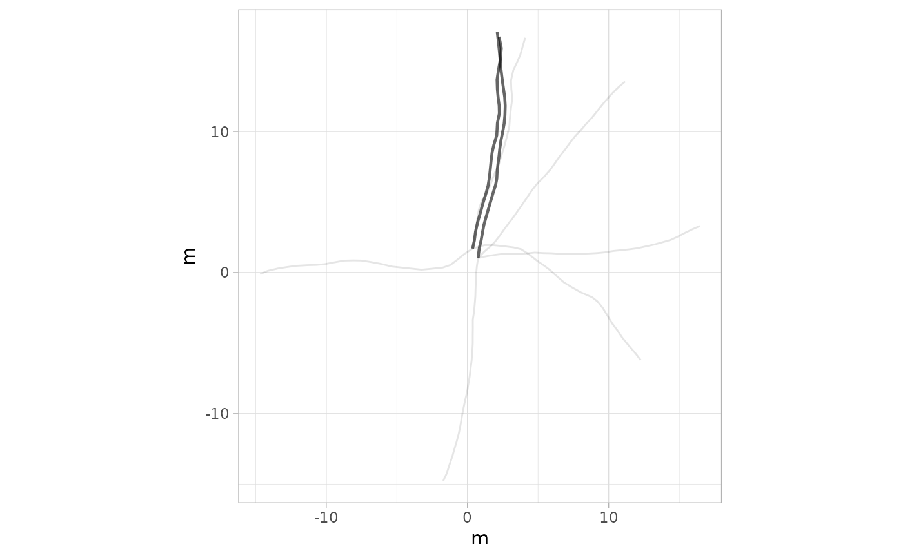
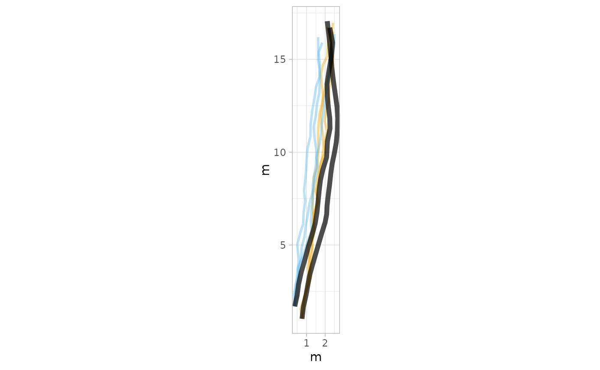
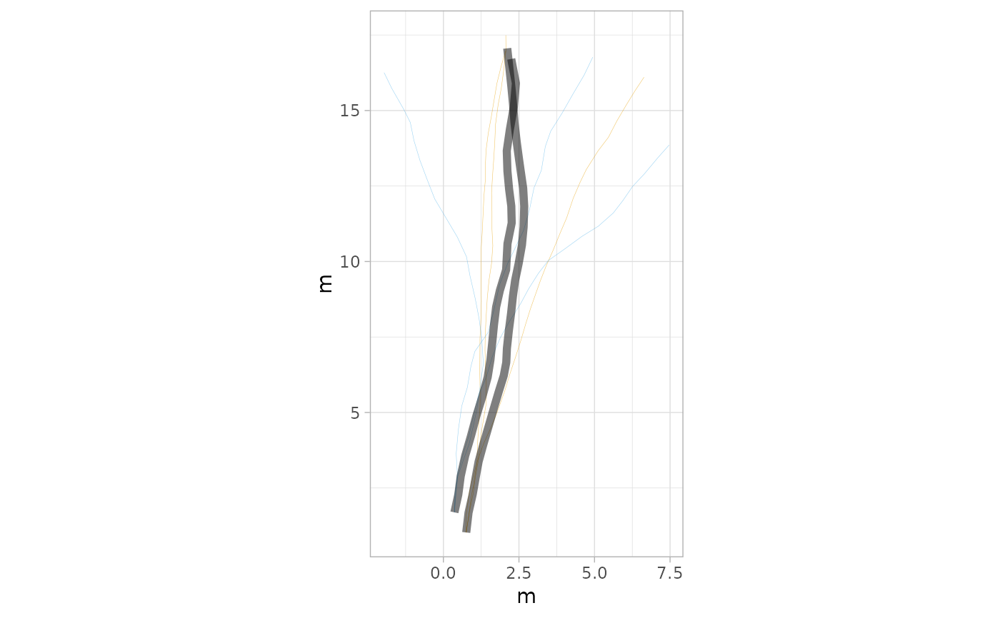
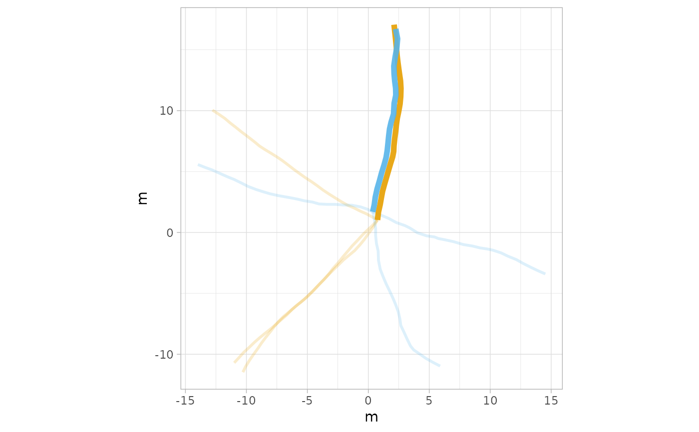
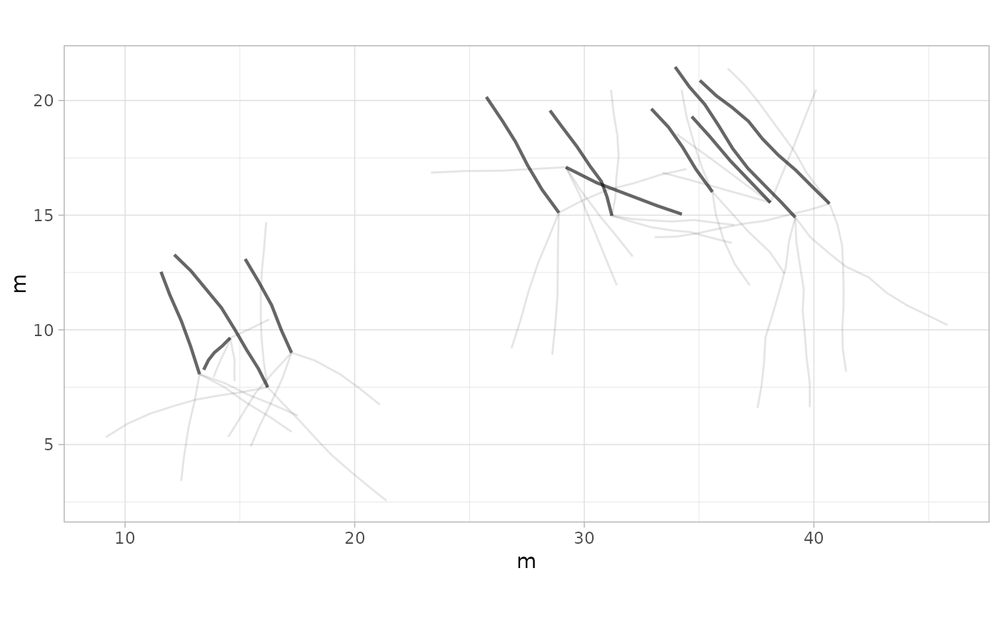
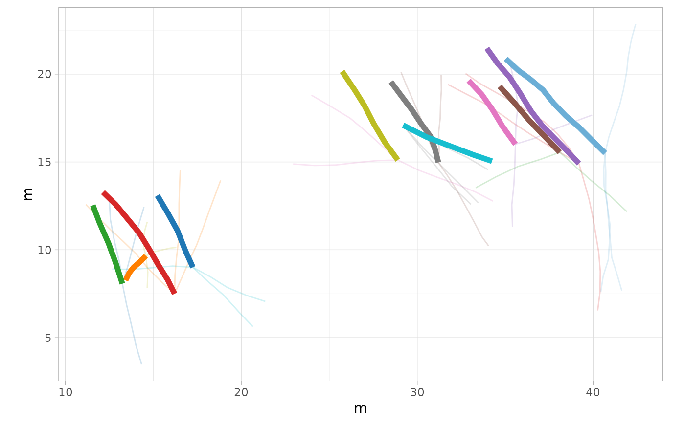
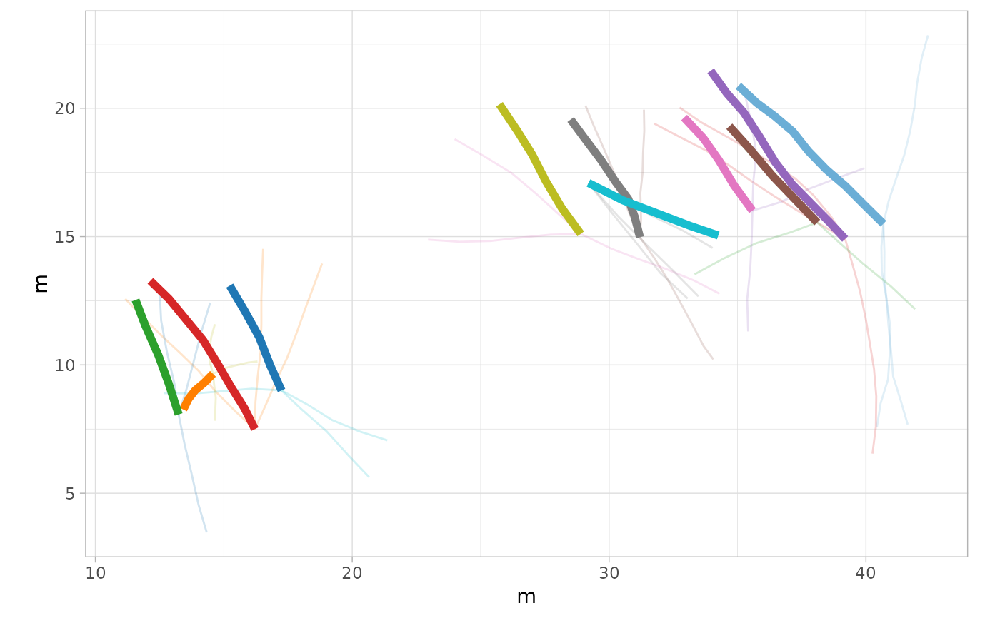

plot_sim() creates a plot that visualizes both simulated and actual movement trajectories. This function is useful for comparing the simulated tracks generated by simulate_track() with the observed trajectories to evaluate how well the simulation models represent real movement patterns.
Usage
plot_sim(
data,
sim,
colours_sim = NULL,
alpha_sim = NULL,
lwd_sim = NULL,
colours_act = NULL,
alpha_act = NULL,
lwd_act = NULL
)Arguments
- data
A
trackR object, which is a list consisting of two elements:Trajectories: A list of interpolated trajectories, where each trajectory is a series of midpoints between consecutive footprints.Footprints: A list of data frames containing footprint coordinates, metadata (e.g., image reference, ID), and a marker indicating whether the footprint is actual or inferred.
- sim
A
track simulationR object, where each object is a list of simulated trajectories stored astrackR objects.- colours_sim
A vector of colors for plotting each set of simulated trajectories. If
NULL, the default color will be black ("#000000").- alpha_sim
A numeric value between 0 and 1 for the transparency level of simulated trajectories. The default is
0.1.- lwd_sim
A numeric value for the line width of the simulated trajectory lines. The default is
0.5.- colours_act
A vector of colors for plotting actual trajectories. If
NULL, the default color will be black ("#000000").- alpha_act
A numeric value between 0 and 1 for the transparency level of actual trajectories. The default is
0.6.- lwd_act
A numeric value for the line width of the actual trajectory lines. The default is
0.8.
Details
The function uses ggplot2 to create a plot with the following components:
Simulated trajectories are displayed with paths colored according to the
colours_simparameter, with the specified transparencyalpha_simand line widthlwd_sim.Actual trajectories are overlaid in the colors specified by
colours_act, with a transparency levelalpha_actand line widthlwd_actto provide a clear comparison.
Author
Humberto G. Ferrón
humberto.ferron@uv.es
Macroevolution and Functional Morphology Research Group (www.macrofun.es)
Cavanilles Institute of Biodiversity and Evolutionary Biology
Calle Catedrático José Beltrán Martínez, nº 2
46980 Paterna - Valencia - Spain
Phone: +34 (9635) 44477
Examples
# Example 1: Simulate tracks using data from the Paluxy River
# Default model (Unconstrained movement)
# Default number of simulations (1000)
simulated_tracks <- simulate_track(PaluxyRiver)
#> Warning: `nsim` is NULL. Using default value of 1000.
#> Warning: `model` is NULL. Defaulting to 'Unconstrained'.
# Plot simulated tracks with default settings and actual tracks
plot_sim(PaluxyRiver, simulated_tracks)

# Example 2: Simulate 100 tracks using the "Directed" model, representing movement toward a
# resource
simulated_tracks_directed <- simulate_track(PaluxyRiver, nsim = 10, model = "Directed")
# Plot simulated tracks with specific colors and transparency for "Directed" model
plot_sim(PaluxyRiver, simulated_tracks_directed,
colours_sim = c("#E69F00", "#56B4E9"),
alpha_sim = 0.4, lwd_sim = 1, colours_act = c("black", "black"), alpha_act = 0.7,
lwd_act = 2
)

# Example 3: Simulate 100 tracks using the "Constrained" model, representing movement along
# a feature
simulated_tracks_constrained <- simulate_track(PaluxyRiver, nsim = 10, model = "Constrained")
# Plot simulated tracks with a different color scheme and width for "Constrained" model
plot_sim(PaluxyRiver, simulated_tracks_constrained,
colours_sim = c("#E69F00", "#56B4E9"),
alpha_sim = 0.6, lwd_sim = 0.1, alpha_act = 0.5, lwd_act = 2
)

# Example 4: Simulate 100 tracks using the "Unconstrained" model (random exploratory
# movement)
simulated_tracks_unconstrained <- simulate_track(PaluxyRiver, nsim = 10, model = "Unconstrained")
# Plot simulated tracks with default colors and increased transparency for "Unconstrained"
# model
plot_sim(PaluxyRiver, simulated_tracks_unconstrained,
colours_sim = c("#E69F00", "#56B4E9"),
alpha_sim = 0.2, lwd_sim = 1, colours_act = c("#E69F00", "#56B4E9"), alpha_act = 0.9,
lwd_act = 2
)

# Subsetting trajectories with four or more steps in the Mount Tom dataset
sbMountTom <- subset_track(MountTom, tracks = c(1, 2, 3, 4, 7, 8, 9, 13, 15, 16, 18))
# Example 5: Simulate tracks using data from Mount Tom
simulated_tracks_mt <- simulate_track(sbMountTom)
#> Warning: `nsim` is NULL. Using default value of 1000.
#> Warning: `model` is NULL. Defaulting to 'Unconstrained'.
# Plot simulated tracks with default settings and actual tracks from Mount Tom
plot_sim(sbMountTom, simulated_tracks_mt)

# Example 6: Simulate 100 tracks using the "Directed" model for Mount Tom
simulated_tracks_mt_directed <- simulate_track(sbMountTom, nsim = 10, model = "Directed")
# Plot simulated tracks with specific colors and transparency for "Directed" model for Mount
# Tom
plot_sim(sbMountTom, simulated_tracks_mt_directed, colours_sim = c(
"#E69F00", "#56B4E9",
"#009E73", "#F0E442", "#0072B2", "#D55E00", "#CC79A7", "#999999", "#F4A300",
"#6C6C6C", "#1F77B4"
), alpha_sim = 0.3, lwd_sim = 1.5, alpha_act = 0.8, lwd_act = 2)
# Example 7: Simulate 100 tracks using the "Constrained" model for Mount Tom
simulated_tracks_mt_constrained <- simulate_track(sbMountTom, nsim = 10, model = "Constrained")
# Plot simulated tracks with different color scheme and increased line width for "Constrained"
# model
plot_sim(sbMountTom, simulated_tracks_mt_constrained, colours_sim = c(
"#E41A1C", "#377EB8",
"#4DAF4A", "#FF7F00", "#F781BF", "#A65628", "#FFFF33", "#8DD3C7", "#FB8072",
"#80BF91", "#F7F7F7"
), alpha_sim = 0.5, lwd_sim = 0.2, alpha_act = 0.6, lwd_act = 2)
 # Example 8: Simulate 100 tracks using the "Unconstrained" model for Mount Tom
simulated_tracks_mt_unconstrained <- simulate_track(sbMountTom, nsim = 10, model = "Unconstrained")
# Plot simulated tracks with a different color scheme and transparency for "Unconstrained" model
plot_sim(sbMountTom, simulated_tracks_mt_unconstrained, colours_sim = c(
"#6BAED6", "#FF7F00",
"#1F77B4", "#D62728", "#2CA02C", "#9467BD", "#8C564B", "#E377C2", "#7F7F7F",
"#BCBD22", "#17BECF"
), alpha_sim = 0.2, lwd_sim = 0.5, colours_act = c(
"#6BAED6",
"#FF7F00", "#1F77B4", "#D62728", "#2CA02C", "#9467BD", "#8C564B", "#E377C2",
"#7F7F7F", "#BCBD22", "#17BECF"
), alpha_act = 1, lwd_act = 2)

# Example 8: Simulate 100 tracks using the "Unconstrained" model for Mount Tom
simulated_tracks_mt_unconstrained <- simulate_track(sbMountTom, nsim = 10, model = "Unconstrained")
# Plot simulated tracks with a different color scheme and transparency for "Unconstrained" model
plot_sim(sbMountTom, simulated_tracks_mt_unconstrained, colours_sim = c(
"#6BAED6", "#FF7F00",
"#1F77B4", "#D62728", "#2CA02C", "#9467BD", "#8C564B", "#E377C2", "#7F7F7F",
"#BCBD22", "#17BECF"
), alpha_sim = 0.2, lwd_sim = 0.5, colours_act = c(
"#6BAED6",
"#FF7F00", "#1F77B4", "#D62728", "#2CA02C", "#9467BD", "#8C564B", "#E377C2",
"#7F7F7F", "#BCBD22", "#17BECF"
), alpha_act = 1, lwd_act = 2)
